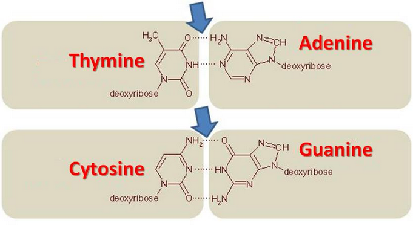

2.2.1 GC Content
In this course we will write functions to analyze the GC content of two viruses. You can download the sequences by clicking the following links: dengue and zika. Right click it, and choose “Save as…” and choose the Bioinformatics/workspace folder that is in the desktop, as always. Remember to load the library seqinr using library(seqinr).
1 GC Content
As seen in the lecture, the A-T bond has two hydrogen bonds, while the G-C one has three. The G-C bond is more thermostable and allows more stable stackings on the DNA strand. DNA with low GC-content is less stable than DNA with high GC-content. Especially at high temperatures.

The GC content is calculated as:
We will define a function that calculates GC from data. The data will have the following format, as obtained from the count function:
a c g t
3426 2240 2770 2299 then we can define:
myGC <- function(data) {
c <- data["c"]
g <- data["g"]
total <- sum(data)
(c+g)/total
}We will use this to calculate the GC content for dengue:
> dengue <- read.fasta("dengue.fasta")[[1]]
> dengueFreq <- count(dengue,1)
> dengueGC <- myGC(dengueFreq)
> dengueGC
0.4666977 Threfore, the dengue sequence has around 47% of GC content. Do the same for zika, by yourself.
1.1 Using seqinr
The library seqinr has a function that automatically calculates the GC content for any sequence.
> GC(dengue)
0.4666977